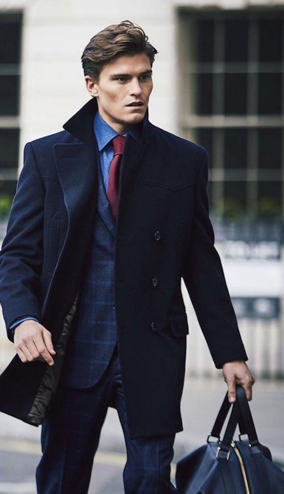
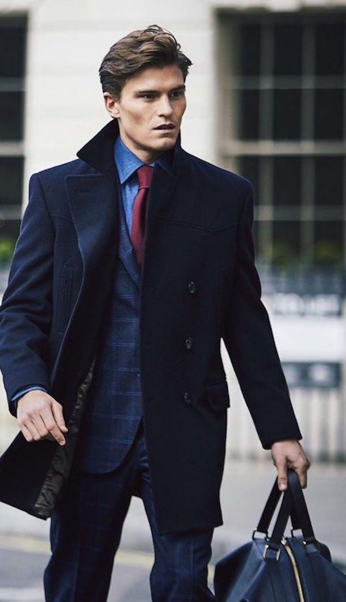

Sweaters: Sweaters are a staple for winter, providing warmth and style. Choose from a range of materials like wool, cashmere, or knit blends. Opt for classic crew neck or V-neck styles, or try out chunky cable-knit or turtleneck sweaters for added texture and warmth.
 
